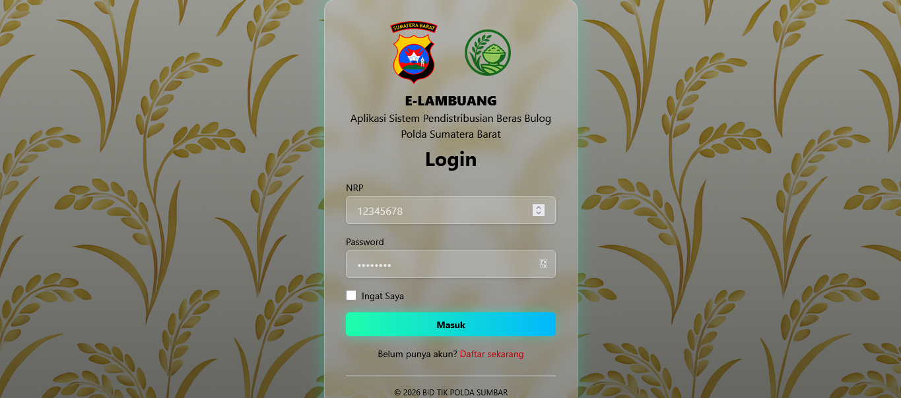
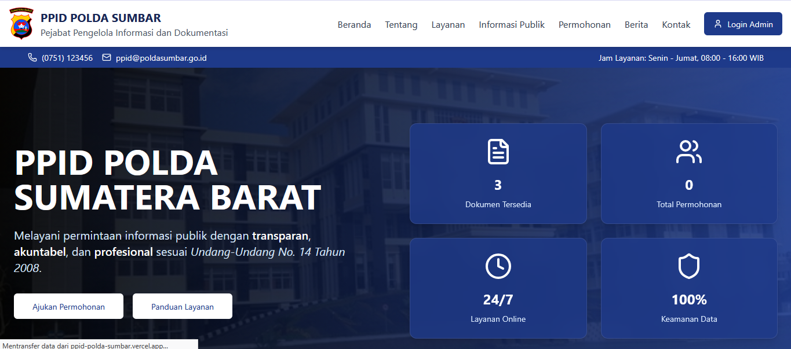
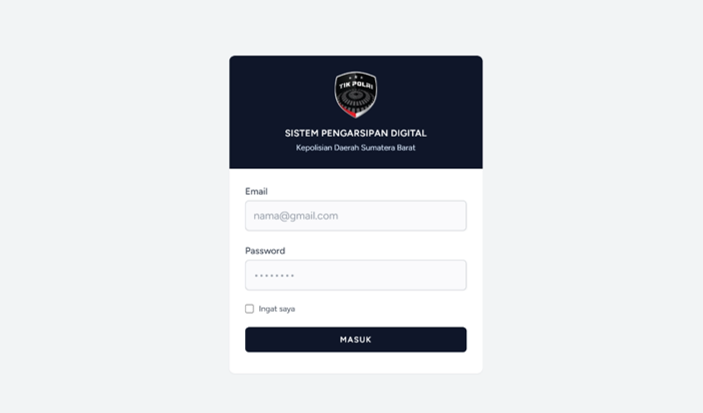
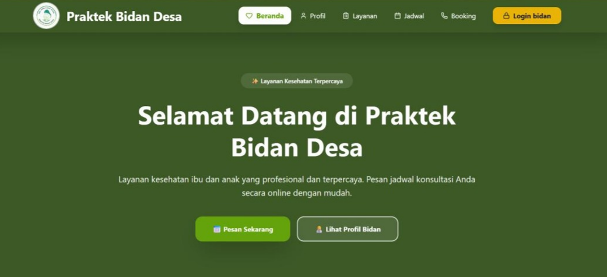

Fresh Graduate in Informatics from Universitas Negeri Padang with hands-on experience developing government information systems, web applications, and research-based software solutions using Laravel, PHP, JavaScript, and MySQL.
I am a Web Developer with a strong interest in building modern, responsive, and user-friendly web applications.
Through academic projects, internship experience, and research, I have developed practical skills in designing, developing, testing, and deploying web-based systems.
I enjoy solving real-world problems, improving user experiences, and continuously learning new technologies in web development.

Digital rice distribution management platform developed during internship at Polda Sumbar.

Public information portal designed to improve transparency and information accessibility.

Final thesis project featuring TF-IDF document retrieval, archive management, workflow monitoring, and document search optimization.

Web-based healthcare administration system designed to support village midwife services with responsive interfaces and integrated data management.
Universitas Negeri Padang
GPA 3.54 / 4.00
2022 – 2026
Currently open for Internship, Junior Web Developer, Front-End Developer, and Full Stack Developer opportunities.